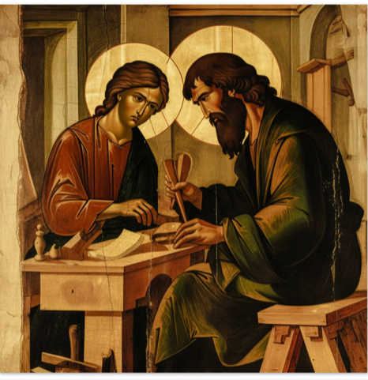
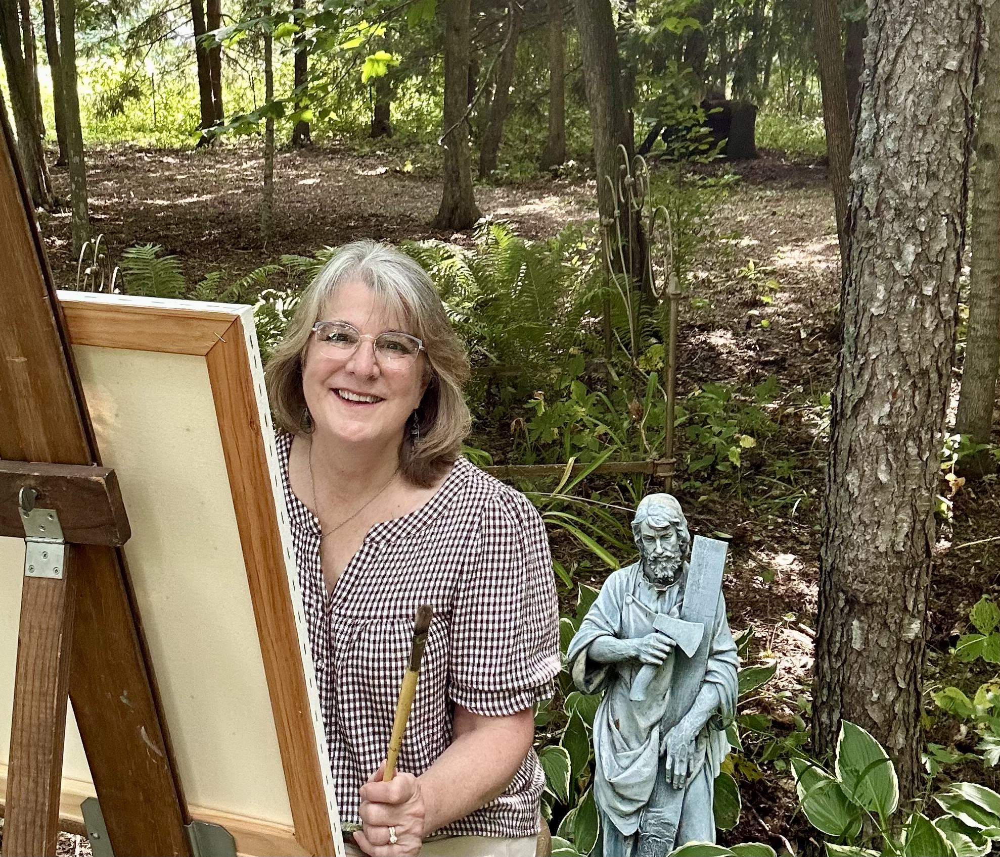
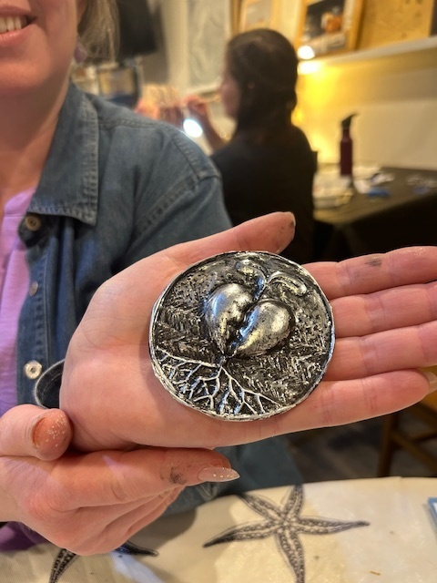

Our story
At Saint Joseph's AtelierWe believe that art is about much more than creating beautiful projects, it is an opportunity to grow in confidence, creativity, and appreciation for God's creation. Making art is a Catholic thing. This is why:
“The Word became flesh.” (John 1:14). Jesus entered a body, a family, friends, a place, and history. He ate with people. He was present to those who walked with Him. He allowed himself to be interrupted. He worked with tools and materials. In today’s world which is ever more digitized, making art is all the more important for the human person. God created humans with the ability to look attentively, to be curious, to ask questions, to plan and order how things could work together, to create original work with our hands, and then to monitor, adapt and reflect on what we have created.
The Catholic faith views artists as “co-creators” with God, using creativity to make the invisible, spiritual world visible. The mission of Saint Joseph’s Atelier is to provide a welcoming, peaceful, faith-centered environment where young people are encouraged to slow down, observe carefully, and develop their artistic abilities through meaningful exploration and practice. Students learn from master artists while building skills in drawing, painting, printmaking, color theory, composition, and mixed media. Students are guided toward creating original artwork that reflects their own ideas and God-given gifts. Along the way, students not only develop artistic skill but also build confidence, form new friendships, and cultivate a deeper appreciation for beauty, truth, and goodness.

Faith-Centered Learning
Every class begins with prayer and encourages students to discover the transcendentals of beauty, truth, and goodness through art.
We pray
“Ecce” Here I am Lord!
“Fiat” Yes, to You Jesus - may Your will be done in me and in today’s class
“Magnificat” - Let all I do and create give Glory to You and the Father!
Small Class Size
Classes at the Atelier are kept to 7 students because we have learned that the time given to personal encounter makes all the difference in a child’s experience. A semi-private class allows everyone, students and teacher, to benefit and be energized. The atmosphere is gentle and the teacher is able to visit and mentor each child several times as needed.
Eye, Mind, Body, and Spirit
Blind contour: students practice eye-hand coordination as they carefully observe and draw continuous line drawings of objects in pen and ink. Manual exercises with varied tools such as ink pens, pastels, charcoal, and paint enable students to discover ways that altering hand pressure and arm movement creates confident, expressive lines and marks. These practices promote awareness of how the body cooperates in the act of creating. Perspective exercises allow students to explore color, value, volume, and size so they can give their drawings the illusion of space and depth. Color theory exercises: students focus on how to organize their paint palette, then explore color as they mix hues, tints, and shades.
Original Creative Growth
Projects are designed to encourage a child's creativity. The instructor demonstrates on a separate paper and shares ideas, but never touches a child's work. Thus, the work a child brings home is original—created from scratch. No pre-cut shapes or templates are used. A child's personal mark is respected and celebrated as interesting and carrying its own beautiful merit.

Your instructor
Donna Zoller-Warner"I feel like there is nothing more truly artistic than to love people."
- Vincent Van Gogh
Saint Joseph's Atelier is led by Donna Zoller-Warner, a professional artist, educator, and homeschooling mother with a lifelong passion for creativity and teaching. Donna earned her Bachelor of Fine Arts and spent years working as a freelance designer and illustrator before pursuing a career in education. Over the years, she has taught in Catholic, private, and public schools, served as an elementary school Art Specialist, and worked extensively with homeschool students and co-op programs. Her experience allows her to combine solid artistic instruction with a patient and encouraging teaching style. Donna believes that every child is uniquely gifted and capable of creating meaningful artwork. Her goal is to provide a peaceful environment where students can learn artistic skills, grow in confidence, and develop a deeper appreciation for beauty, truth, and goodness through the visual arts.
